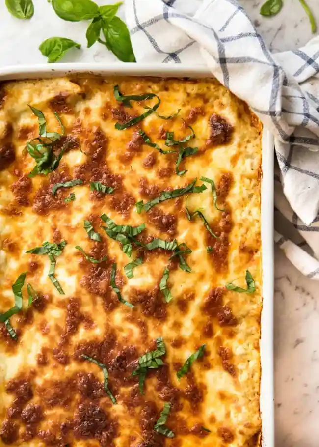

Lasagna
Home
Broccoli Pasta
Roast Lamb

Description
Lasagna, lasagna. How I love thee! It is possibly one of the most loved foods
in the whole wide world, and understandably so. There is just something so
sentimental about lasagna, so comforting. It evokes images of of gatherings
with family and friends all around the world. It is the sort of food that is
like a big warm hug, and so more-ish you want to keep digging in until you
burst.

Ingredients
- 1 onion , finely chopped (white, yellow or brown)
- 1 tbsp olive oil
- 1 medium carrot , finely diced
- 1 rib / stick of celery , finely diced
- 2 garlic cloves , minced
- 1 kg / 2 lb beef mince (ground beef) (Note 1)
- 800g / 28 oz crushed tomato
- 1/4 cup tomato paste
- 1 cup (250ml) red wine , bold not light (Note 2)
- 3 beef bouillon cubes , crumbled
Steps
-
Heat oil in a large heavy based pot over medium heat. Add garlic, onion,
celery and carrots. Cook for 10 minutes until softened and sweet – they
should not brown (if they do, turn heat down).
- Add beef, turn heat up and cook the beef, breaking it up as you go.
-
Once the beef has all turned brown, add the remaining Ragu ingredients
EXCEPT the sugar.
-
Stir then adjust the heat so it is bubbling very gently. Place the lid on
and cook for 1.5 – 2 hours, stirring every now and then, then remove the lid
and simmer for 30 minutes.
-
The ragu is ready when the meat is really tender and the sauce has thickened
and is rich – see video for consistency (Note 6). Adjust salt and pepper to
taste, and add sugar if required (Note 3)